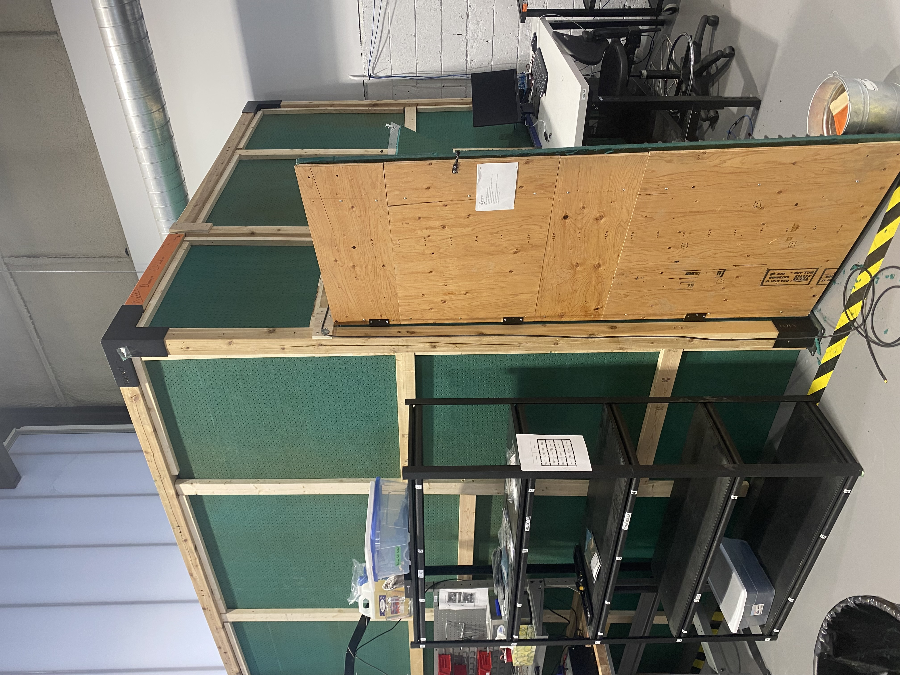
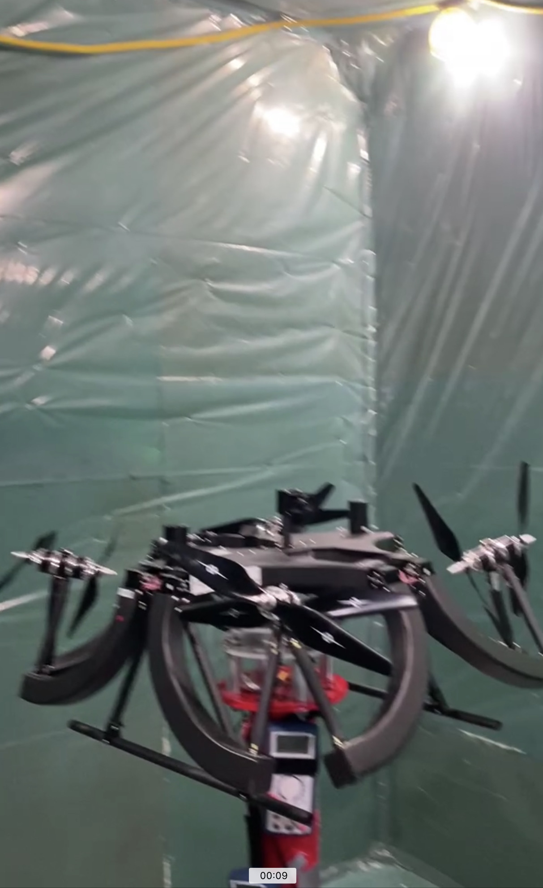

The Anechoic Drone Testing Chamber was designed to facilitate accurate acoustic testing for drone noise reduction. This chamber features advanced soundproofing techniques and precision measurement equipment to analyze sound properties in a controlled environment.


Key Features
- Dimensions: 2m x 2m x 2m
- Soundproofing: Foam wedges and double-layered walls to minimize noise reflections.
- Testing Capabilities: Drone noise analysis and precision acoustic measurement.
- Applications: Ideal for product testing and noise reduction research.
Performance Metrics
- Sound Reduction: 95% noise absorption efficiency.
- Testing Accuracy: ±1 dB
- Build Time: 4 weeks
← Back to Portfolio